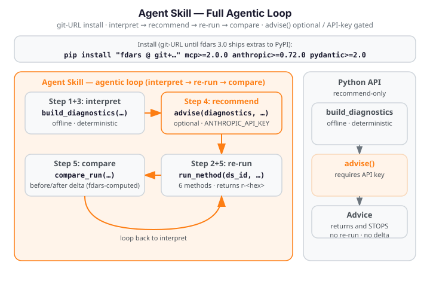

Agent Skill¶
Illustrative fences — not run in the docs build
All Python and Bash fences on this page are illustrative only. They require
pip install "fdars @ git+https://github.com/sipemu/pyfda" mcp>=2.0.0 anthropic>=0.72.0 pydantic>=2.0
(Python 3.10+) and — for the grounded-advice step — ANTHROPIC_API_KEY to be set.
These fences are not executed during the docs build. The docs build does not
depend on the [mcp] or [advisor] extras, Python 3.10+, or an API key.
The fdars-advisor Agent Skill packages the full interpret → recommend → re-run →
compare agentic loop as a reusable Anthropic Agent Skill.
Where the Python API returns an Advice object and stops, and the
MCP Server exposes three composable tools for manual orchestration, the Agent
Skill orchestrates those tools automatically: it loads a dataset, runs an fdars method,
builds offline diagnostics, optionally calls the grounded advise() step, re-runs with
adjusted parameters via compare_run, and prints the observable before/after delta —
all in a single, self-contained walkthrough script. See the overview for the
grounding invariant and the three-surface architecture.

Setup¶
Install dependencies (run once in the agent's execution environment):
# Current workaround — fdars[mcp] and fdars[advisor] extras are not yet
# published on PyPI 0.2.0; install from git + extras separately:
pip install "fdars @ git+https://github.com/sipemu/pyfda" mcp>=2.0.0 anthropic>=0.72.0 pydantic>=2.0
Once fdars 0.3.0+ is published to PyPI with the [mcp,advisor] extras:
Compatibility¶
The fdars-advisor skill has the following execution-environment requirements
(see SKILL.md compatibility: field):
| Requirement | Detail |
|---|---|
| Python version | 3.10+ required — mcp>=2.0.0 does not support Python 3.9. |
| Package manager | pip access is required to install fdars and the extras (mcp>=2.0.0, anthropic>=0.72.0, pydantic>=2.0). |
| Offline walkthrough | No API key required — build_diagnostics and compare_run are fully offline and deterministic. |
| Grounded advice | ANTHROPIC_API_KEY must be set in the environment to enable the advise() step (Step 4 of the walkthrough). |
| Environment | Designed for Claude Code and Managed Agents environments with allow_package_managers enabled. |
The offline walkthrough (Steps 1–3 and Step 5) runs without any network connection or API
key. The grounded-advice step (Step 4) is explicitly gated on ANTHROPIC_API_KEY — if the
key is absent the step is skipped gracefully and the script continues to the deterministic
compare step.
Offline Walkthrough¶
Run the full interpret → re-run → compare loop against the Canadian Weather dataset. No network connection or API key is required for the walkthrough core:
The script exercises five steps mirroring scripts/fdars_advisor_walkthrough.py exactly:
Step 1 — Load Canadian Weather and register in the handle registry¶
import numpy as np
from fdars import datasets
from fdars.mcp._registry import registry
# Clear the singleton registry before starting (avoids stale handles on re-runs)
registry.clear()
# Load the Canadian Weather dataset: 35 stations × 365 daily observations
ds = datasets.load_canadian_weather()
X = np.asarray(ds.data.data, dtype=float) # shape (35, 365)
day = np.asarray(ds.argvals, dtype=float) # shape (365,) — day-of-year grid
# Register in the handle registry before calling any tool
dataset_id = registry.store_dataset(X, day)
# dataset_id is e.g. "ds-3fa2c1b4"
The Canadian Weather dataset contains temperature curves for 35 Canadian weather stations,
each evaluated at 365 daily points. The dataset is bundled with fdars — no download required.
Step 2 — Run smoothing (n_basis=15) as the "before" result¶
from fdars.mcp._runner import run_method
# Run pspline_fit_gcv with n_basis=15 — the "before" parameter setting
before_result = run_method(dataset_id, "smoothing", n_basis=15)
before_result_id = registry.store_result(before_result)
# before_result_id is e.g. "r-a1b2c3d4"
# The raw result dict includes scalar GCV and EDF values:
print(f"GCV (before): {before_result.get('gcv', 'n/a'):.6f}")
print(f"EDF (before): {before_result.get('edf', 'n/a'):.4f}")
run_method maps "smoothing" to fdars.basis.pspline_fit_gcv and stores the raw result
(fitted curves, GCV value, EDF, AIC, BIC) in the registry. Only the opaque handle crosses
the tool boundary — arrays stay in-process. The scalar gcv and edf keys from before_result
are the inputs build_diagnostics uses to compute the gcv_aic_approx, gcv_bic_approx,
optimal_gcv, and optimal_edf diagnostic keys in Step 3.
Step 3 — Build offline diagnostics¶
from fdars.advisor import build_diagnostics
# Build deterministic diagnostics — offline, no API key required
diagnostics = build_diagnostics(before_result, "smoothing")
# diagnostics is a plain dict of JSON-serialisable values, e.g.:
# {'gcv_aic_approx': ..., 'gcv_bic_approx': ..., 'optimal_gcv': ..., 'optimal_edf': ...}
build_diagnostics is deterministic and offline — two calls on the same input return the
same dict. This is the grounding source: every value the LLM cites in Step 4 comes from here.
Step 4 — (Optional) Grounded LLM advice¶
This step is gated on ANTHROPIC_API_KEY. When the key is absent the script prints a skip
notice and continues to Step 5. See Grounded Advice below for the full
invocation example.
Step 5 — Compare: re-run with n_basis=25 and print the delta¶
from fdars.mcp._compare import compare_run
# Re-run with n_basis=25 and compute the before/after delta
compare_result = compare_run(
dataset_id,
"smoothing",
before_result_id,
{"n_basis": 25},
)
delta = compare_result["delta"]
print(f"Delta (after - before) [{len(delta)} scalar keys]:")
for k, v in delta.items():
sign = "+" if v >= 0 else ""
print(f" {k}: {sign}{v:.6f}")
compare_run re-runs pspline_fit_gcv with n_basis=25, builds diagnostics for both the
before and after runs, and returns a delta dict — every scalar key where after[key] -
before[key] is finite. Expected output:
Delta (after - before) [4 scalar keys]:
gcv_aic_approx: -2181.912236
gcv_bic_approx: -2108.448571
optimal_gcv: -0.068405
optimal_edf: +9.853957
These numbers are fdars-computed (pspline_fit_gcv, n_basis 15 vs 25). No fabrication: every delta value is produced by the fdars Rust core.
Grounded Advice¶
When ANTHROPIC_API_KEY is set, Step 4 of the walkthrough calls advise() with the
diagnostics from Step 3:
The script calls:
from fdars.advisor import advise
advice = advise(
diagnostics,
task="parameter",
domain_context="35 Canadian weather stations, daily temperature curves",
)
print(advice.interpretation)
for rec in advice.recommendations:
print(f"[{rec.kind}] {rec.action}")
for ev in rec.evidence:
print(f" evidence: {ev}")
Expected output structure: an interpretation paragraph explaining the smoothing diagnostics,
followed by Recommendation items with action, kind, rationale, expected_effect, and
evidence fields — each evidence item citing a specific value from the build_diagnostics
output (e.g. "optimal_gcv=0.123", "optimal_edf=12.4"). After the advice block, the script
always continues to Step 5 and prints the same deterministic 4-key delta regardless of whether
advise() was called.
Tools Referenced¶
This skill orchestrates the Phase 12 MCP tools built in python/fdars/mcp/. See the
MCP Server page for the full tool reference and the stdio setup:
| Tool | Function | Description |
|---|---|---|
fdars_run_method |
run_method in fdars.mcp._runner |
Run any of the five supported fdars methods (smoothing, clustering, FPCA, alignment, basis) and store the result handle. |
fdars_compare_run |
compare_run in fdars.mcp._compare |
Re-run with changed parameters and compute the before/after delta; all numbers are fdars-computed. |
The advisor package (python/fdars/advisor/) provides build_diagnostics and advise():
the grounding source for all LLM recommendations. See the Python API for the
full function reference.
Grounding Invariant¶
Every recommendation cites a diagnostics value computed by fdars (via build_diagnostics).
The LLM (advise()) never fabricates numbers — it only interprets and reasons over the
diagnostics dict. This invariant is enforced at three levels:
- Schema: the Pydantic
Recommendation.evidenceschema requires a non-emptylist[str]. Every recommendation must include at least one evidence item citing a specific diagnostic value. - System prompt: the grounding prompt instructs the model to include at least one evidence item per recommendation, to omit any claim not supported by a provided value, and to never estimate or assume numerical results not explicitly given in the diagnostics.
- Runtime guard: after the model responds,
advise()runs a programmatic grounding check (_check_grounding) that inspects every evidence item and raisesGroundingViolationErrorif it cites a numeric value absent from the diagnostics dict. It runs on every provider path and never retries on a violation, so a fabricated number raises rather than reaching the caller.
The walkthrough confirms this end-to-end: the delta values printed in Step 5 are the same
whether or not advise() was called in Step 4 — fdars computes every number regardless of
the LLM path. See the overview for the full grounding-invariant description.
Next Steps¶
- Overview — grounding invariant, three-surface architecture, and the full interpret → recommend → re-run → compare loop diagram
- Python API — the recommend-only surface (
build_diagnostics,advise,describe_cluster_differences) - MCP Server — the three composable MCP tools and the stdio setup